1. Download and Setup
1.1 Download Latest REST Commander Source
Fastest way to get started: get the latest REST Commander source code package or fork/clone our Github repo.
Download REST Commander (78 MB)
1.2 Start REST Commander with Zero-installation
REST Commander project is built based on Play! Framework, on the details for how to deploy and start application in Play! Framework, please refer to the Official Documentation and Installation Guide. Before downloading, be sure to have Java (JRE or JDK) pre-installed on your machine.
REST Commander supports one-click start with zero-installation. Based on the operational system you use, simply run the command below to start the REST Commander instance. Here assuming you deployed REST Commander application on your local machine(http://localhost:9000/), after service is up, you can visit the REST Commander home page at
http://localhost:9000/
Linux/Mac
Make sure you have Java (OpenJDK or SunJDK) installed. Extract the source code to local file system, for example /home/user/RestCommander/. Run the following command in Terminal to start the REST Commander:
sh /home/user/RestCommander/start_application_linux_or_mac.sh start
To monitor the real-time system log and job progress of REST Commander services, we suggest use tail command, for example:
tail -f /home/user/RestCommander/AgentMaster/logs/system.out
Windows
Make sure you have Java (JDK6+ or just JRE) installed. Extract the source to local file system, for example c:/RestCommander/. Then simply execute the following .bat file to start REST Commander:
c:/RestCommander/start_application_win.bat
To monitor the real-time system log and job progress of REST Commander services in Windows environment, we suggest use the free tool BareTail to open the following system log file
c:/RestCommander/AgentMaster/logs/system.out
After successfully starting Commander, you should be able to see the following page at http://localhost:9000 in your browser.
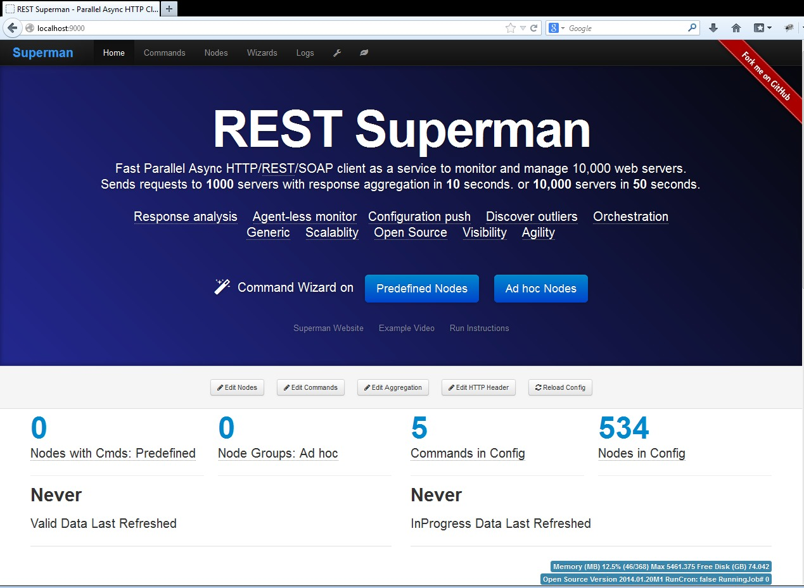
1.3 Import into Eclipse
REST Commander is a Play Framework V1.2.4 (Java) project, more information about importing into Eclipse IDE is here.
Before importing REST Commander project into Eclipse workspace, you need to run the eclipsify process to generate Eclipse project metadata. You can use "eclipsify" toolkit provided by Play! Framework for it. Clone project in Git from Github REST Commander Repo to local machine, e.g., C:\RestCommander\AgentMaster.
In Windows environment, simply double click the following .bat file:
S:\GitSources\AgentMaster\AgentMaster\eclipsify_application.windows.bat
Or, in command line run:
S:\GitSources\AgentMaster\AgentMaster>play-1.2.4\play eclipsify AgentMaster
Note that for Linux/Mac user: need to run "chmod +x" for "play-1.2.4/play".
Import existing project in Eclipse: import the AgentMaster folder.
Compile errors? Try rebuild and clean: (menu: Project->Clean->Clean all projects)
Run application: Open Eclipse, import existing project. After import, check left navigate, under "eclipse" folder: AgentMaster.launch : run as AgentMaster. Then open browser: http://localhost:9000/
1.4 Shutdown REST Commander
Linux/Mac
Run the following command to stop REST Commander service:sh /home/user/RestCommander/start_application_linux_or_mac.sh stop
Windows
When you close the window of start_application_win.bat. The server will be ended. Double click the following file to remove the pid and clean up the service, so that next time Commander can be run successfully.
c:/RestCommander/clean_application_pid_after_run_win.bat
2. Overview
2.1 Basic Work Flows
This graph gives the basic idea of REST Commander work flow. It obtains the target server as a "node group" and a command for the URL to hit, and then send the requests in parallel. The response and request for each server become a pair and saved into a hashmap into memory. This hashmap is also dumped into disk with timestamp as a json file. From this request/response pair for each node, a regular expression is used to extract any substring from the response content. There is a default aggregation mode just to aggregate on the HTTP response status code.

3. Sample: Check 3 Servers Health and Aggregate Responses
Summary: We want to hit 3 web servers on a uniform URL of "/validateInternals.html" with CPU/Memory/Health information. Will show you how easy to fire the requests and aggregate the responses.
- http://www.yangli907.com/validateInternals.html
- http://www.jeffpei.com/validateInternals.html
- http://www.restsuperman.com/validateInternals.html
For simplicity, we have defined a "node group" containing the 3 servers, and a "command" that is to hit this URL of "/validateInternals.html". For more details or learning how to create a new node group or command, please check Nodes and Commands on Documentation page.
1.Start the wizard on predefined nodes: Click the "Predefined Node" button for Command Wizard in "Home" page: localhost:9000/commands/wizard. If you want to send requests to an arbitrary list of nodes with pre-definition, you may use the wizard for "Ad hoc node" or leverage the REST API mode (Check Use Cases page).
2.Select the node group: ADHOC_NODE_LIST_SAMPLE_WEBSERVERS. Here its naming may be confusing. here this is a predefined node group, although the name has "ADHOC_NODE_LIST".
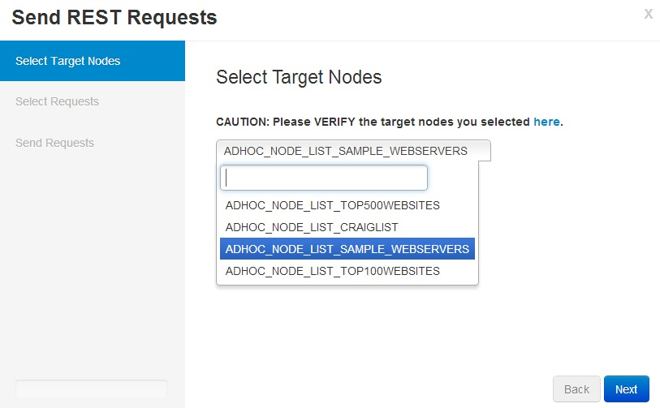3. Select the command: GET_VALIDATE_INTERNALS.
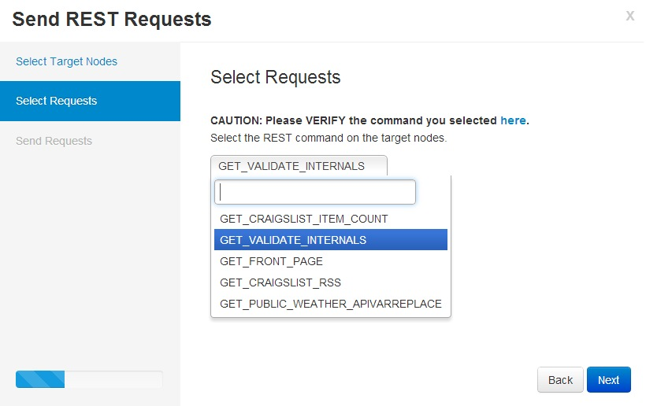4. Send requests.
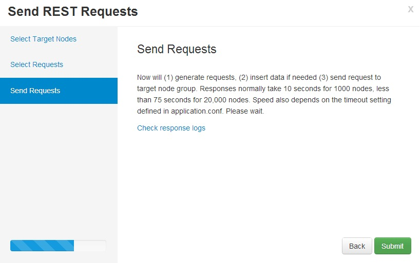5-A. Job status: From the system.out log for this job: it completes in 0.4 seconds.
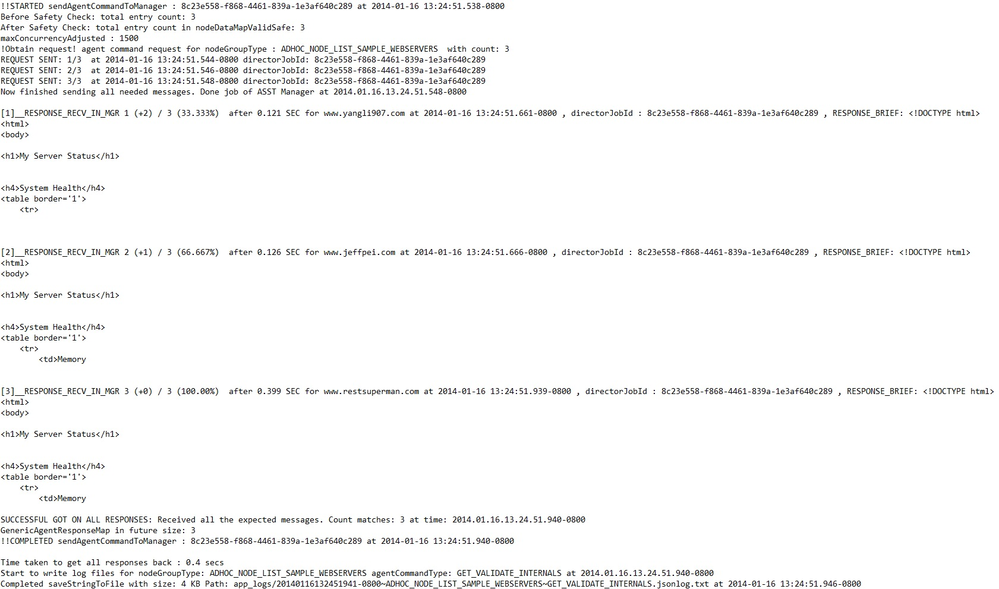5-B. Response returned.: After a couple of seconds, the response return. The "Response data" shows the raw JSON responses. "Aggregation" gives the table based view of aggregation with regex; "Aggregation in text" gives the text based view of aggregation with regex. Now the responses are not only in the memory but also saved as text json log files in the disk. You may view the "Response logs" to view them too.
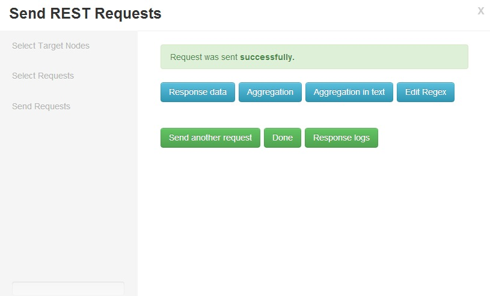6-A. Response data:shows the raw JSON responses.
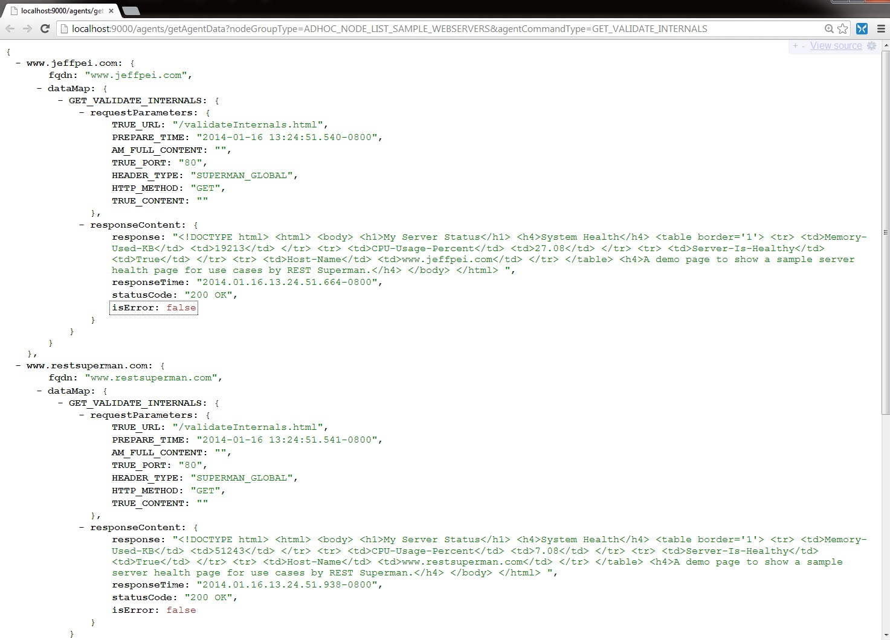6-B1. Aggregation: Default: Click "Aggregation" will give the table based view of aggregation. Default aggregation rule is "SUPERMAN_SPECIAL_STATUS_CODE", which is the HTTP status code. For more information about aggregation, please view Aggregation Section in Documentation page.
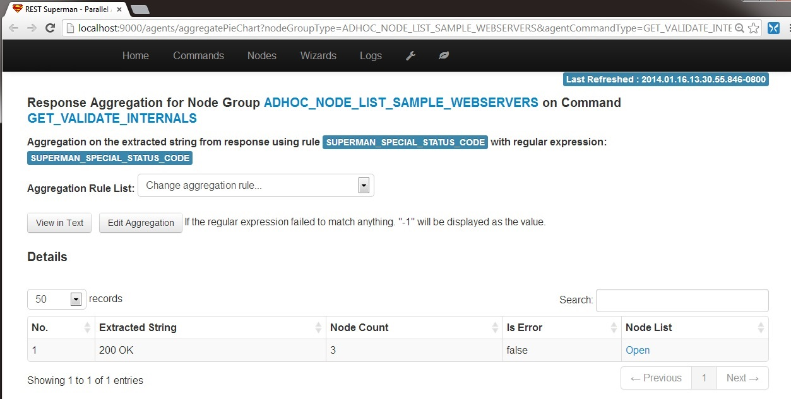6-B2. Aggregation: CPU: Change the aggregation rule (regular expression) to PATTERN_VI_SERVER_CPU, will give the strings extracted by the regulare expression:
.*<td>CPU-Usage-Percent</td>\s*<td>(.*?)</td>[\s\S]*
6-B3. Aggregation: Health: Change the aggregation rule (regular expression) to PATTERN_VI_SERVER_HEALTH, will give the strings extracted by the regulare expression:
.*<td>Server-Is-Healthy</td>\s*<td>(.*?)</td>[\s\S]*

6-B4. Aggregation: Check Node List: Click the "Open" in the "Node List" column for the row of "Extracted String" is "true": you will find the 2 nodes that have the values as True. .
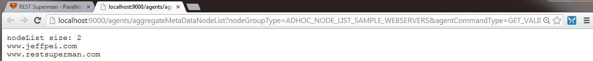6-C. Aggregation in text: It gives the text based view of aggregation with the default aggregation based on HTTP response status code. You may change the URL to use another aggregation rule.
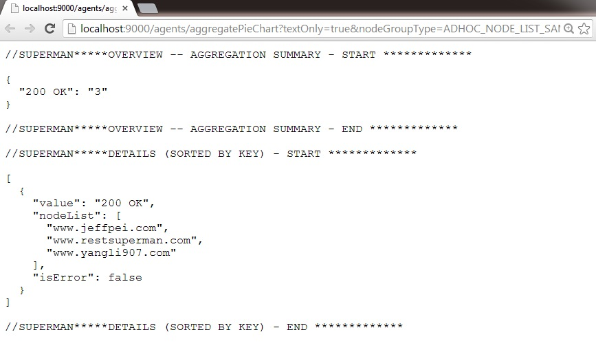3. Sample: Hit Top 100 Website Front Page
We obtain from Wikipedia for the top 100 websites and remove some inappropriate ones, there are 89 websites left. Similar to the previous example, you can use the same wizard but change the node group to be "ADHOC_NODE_LIST_TOP100WEBSITES" and command to be "GET_FRONT_PAGE". We will obtain the responses. Because each website has a very different response, we just show the aggregation on HTTP response status codes here.
Job status:From the system.out log for this job: it completes in 1.848 seconds. You may find the last two are significantly slower than the rest of them.
Tip: It is very common the last several slow or stuck nodes significantly drag down the performance. Sometimes when the nodes stuck we need our timeout to be fine-tuned. Timeout setting is very important to performance! Please check our timeout settings here.
Response data:shows the raw JSON responses of part of the top 100 websites.
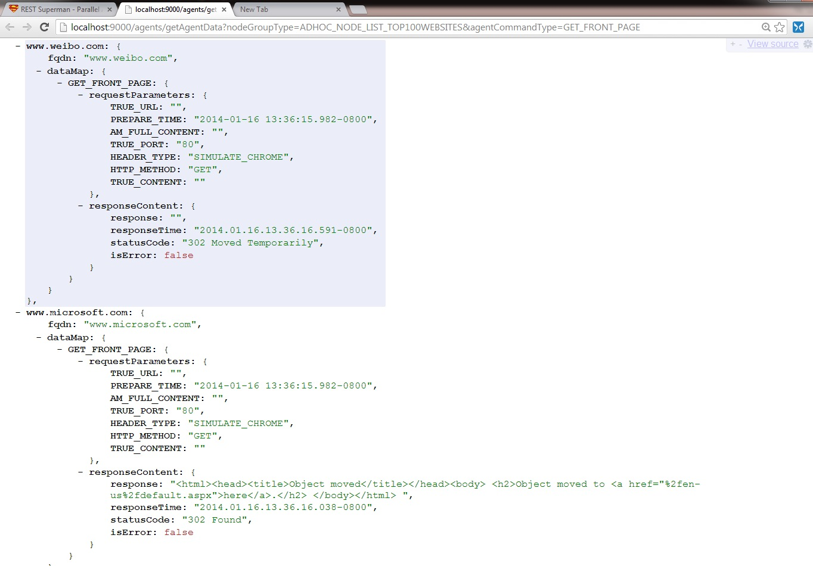6-B1. Aggregation: Default on HTTP status Code
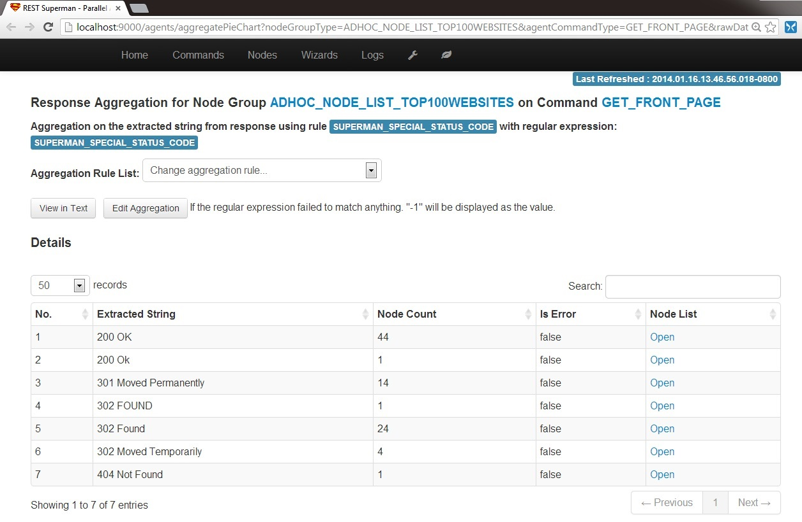Some Exercise
Check how fast for your machine to hit top 500 webistes: Now it is your turn :-) This may be too simple... Just change the node group to be "ADHOC_NODE_LIST_TOP500WEBSITES"; very similar to the Top 100 webiste. Check the system.out? How long does it take in your computer? May try to tune the timeout and try again.
Also, can you try to use the wizard for ad hoc nodes to hit some random 40 websites and check it out? You can obtain some websites from the existing node group.
Get last update time for 15 craigslist websites: 1. Try to use the wizard for pre-defined nodes, but change the node group to "ADHOC_NODE_LIST_CRAIGLIST" and command to "GET_CRAIGSLIST_RSS". Then use the aggregation rule of "PATTERN_UPDATETIME_FROM_CRAIGSLIST_RSS": are you able to extract the last updated time for each craiglist website?
Next
Excellent job! Thanks for your patience of reading this get started tutorial! Please give feedback in our google discussion group. We'd love to hear from you. You may continue to read Documentation page for more on Commander settings, structures and examples. Or you can read Use Cases page for common use cases, recipes of REST Commander, REST APIs examples.